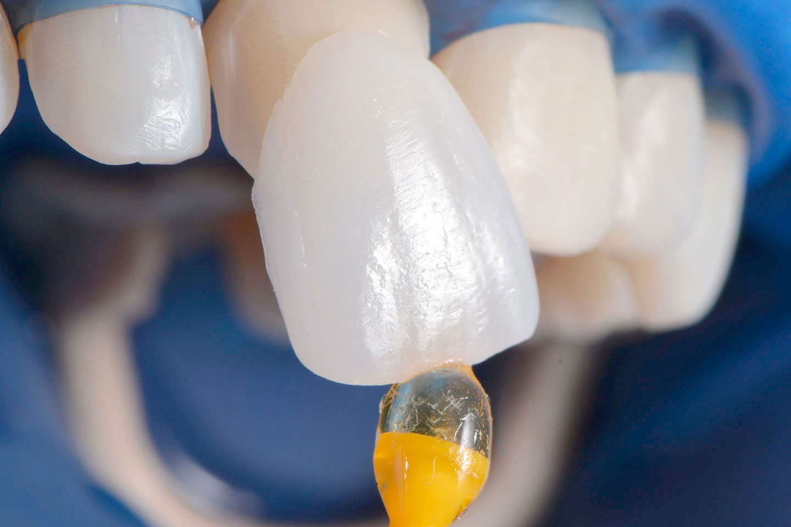
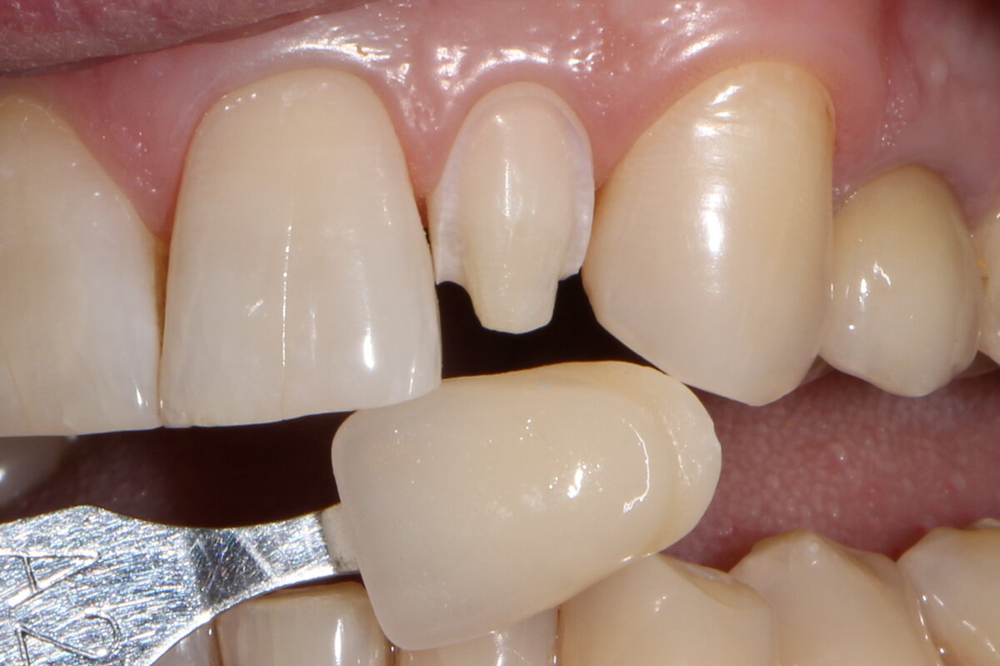

Установка виниров
 Виниры — это тонкие и легкие пластинки, которые устанавливаются на видимую поверхность зуба, чтобы скрыть его недостатки.
Их изготавливают из керамики или специальных композитных материалов.
Виниры — это тонкие и легкие пластинки, которые устанавливаются на видимую поверхность зуба, чтобы скрыть его недостатки.
Их изготавливают из керамики или специальных композитных материалов.